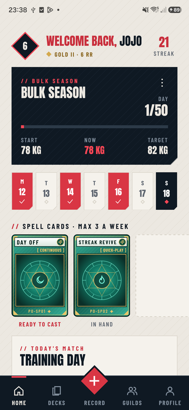
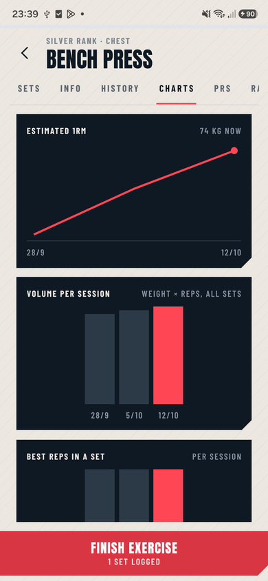
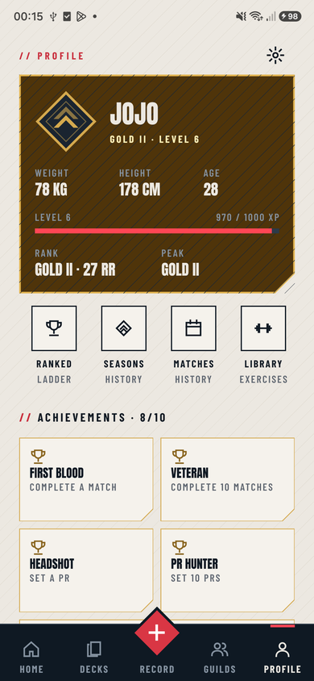
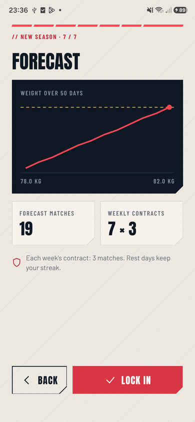

Workouts as a hand of cards
Each exercise card shows last session's best and today's target.
Case study · Mobile app
Every workout is a match, and you win it by beating what you lifted last time.


Draw a card, beat last week, win the match. Real screenshots from the release build.
The 30-second version
Each workout is a match and each exercise a card, and every set is scored live against your last best. Wins feed ranks, streaks and seasons, and it all works offline, syncing to Supabase in the background.
The problem
Getting stronger means adding a little weight or a rep over time. Most apps record what you did and leave the comparison to you. I built this for my own training.
What I built
Each exercise card shows last session's best and today's target.
Tick a set and it tells you right away if you beat last time, flags PRs and starts the rest timer.

Rank, streak, season progress and the bonus cards you earn for staying on target.

Charts for estimated max, volume and reps, plus a rank relative to body weight.

Level, ranks, history, a 69-exercise library and achievements.

Set a body-weight goal and it forecasts the weight curve and number of workouts.
How it's built
All game rules live in plain TypeScript with no React and no I/O. Screens read and write through one local store that syncs in the background.
Expo Router
37 thin screens.
Features
Saves the workout on every edit, so a killed app resumes where it was.
Domain rules · 87 tests
Local store
Zustand, saved to the phone.
Sync engine
Runs in the background. The UI never waits on it.
Supabase
Postgres with row-level security.
The hard parts
01
A re-render during a card animation could drop it, losing an exercise mid-workout. Stable callbacks and locking the deck during moves fixed it.
02
The app must work with no signal. A small sync engine pushes and pulls changes in the background, and device edits win.
03
A layout scaling helper broke card animations on a real phone, though types, lint and tests passed. I moved the sizes out of the animation code.
How I worked
What I learned
What's next
I'm looking for a full-time job (CDI) in software or AI engineering.